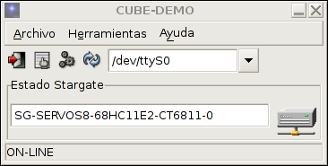
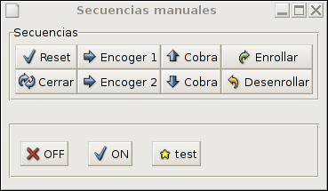
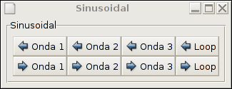
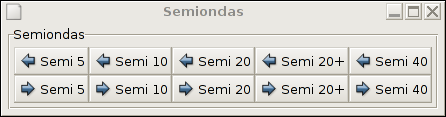

DESCRIPCIÓN:
Para la generación de las secuencias se ha programado la aplicación Cube-Virtual.mono. Las secuencias se pueden grabar en un fichero en formato .f8, para luego ser reproducidas.

|
CUBE REVOLUTIONS: SOFTWARE II |
Introducción
Para la generación automática del movimiento, utilizando el algoritmo de ajuste, se han hecho dos implementaciones:
Implementación en C. Es útil para poder implementar los algoritmos en procesadores empotrados y hacer que el robot sea autónomo.
Implementación en C# y Mono. Es mucho más modular y fácil de ampliar, pero se tiene que ejecutar desde el PC.
Se han creado dos módulos: cube.c, en el que se define un gusano virtual y se pueden realizar operaciones sobre él, y func.c para la definición de las ondas que se utilizarán para la generación del movimiento.
El programa cube-generate.c es un ejemplo de utilización de estos módulos para la generación de secuencias de movimiento.
Y por último el programa cube-octave.c es un ejemplo de creación de un fichero en octave para visualizar el gusano.
MODULO CUBE |
DESCRIPCIÓN: Módulo para la creación y manipulación del robot Cube Revolutions virtual, de 8 articulaciones. Sólo permite trabajar con ondas sinusoidales y semiondas, y sólo para un único gusano. De todas las funciones de la API, sólo unas cuentas se utilizan realmente para la generación. Para más información ver el programa ejemplo de ejemplo Cube-generate |
FUNCIONES DEL INTERFAZ: |
/*********************************************************************/ /* Inicializacion del modulo de CUBE. Hay que ejecutarlo antes de */ /* usar cualquier otra funcion. */ /* Se inicializan todas las estructuras de datos y se genera un */ /* CUBE apoyado sobre el eje x, con todos su angulos a 0 */ /*********************************************************************/ void cube_init(); /***************************************************************************/ /* Se inicializa a cube, haciendo que se encuentre en posicion horizontal */ /* con y = 0. Se calculan las coordenadas x,y de cada articulacion en */ /* funcion de las constantes del gusano */ /* Usar esta funcion siempre que se quiera volver al estado inicial */ /***************************************************************************/ void cube_reset(); /***************************************************************************/ /* Ajustar cube a la funcion de contorno activa, desde la articulacion */ /* indicada en adelante. */ /* */ /* Para cada articulacion primero se calcula el angulo de aproximacion y */ /* luego se aplica el algoritmo de ajuste. */ /***************************************************************************/ void cube_ajustar(int art); /*********************************************/ /* Establecer la funcion de contorno activa */ /*********************************************/ void cube_func_contorno_set(double (*func_contorno)(double)); /*******************************************************************/ /* Rotar el gusano entero respecto a la articulacion especificada */ /* Se actualiza de izquierda a derecha, o de derecha a izda segun */ /* el valor del parametro sentido. */ /* */ /* ENTRADA: */ /* -centro : Articulacion centro */ /* -ang : Angulo a girar. */ /* -sentido: Que parte rotar: DERECHA o IZQUIERDA */ /* */ /* La rotacion SE PROPAGA desde la articulacion centro hasta uno */ /* de los extremos. */ /* */ /* El angulo de posicion de la articulacion centro se incrementa */ /* (o decrementa) en el angulo rotado. */ /*******************************************************************/ void cube_rotar(int centro, int ang, int sentido); /************************************************/ /* Obtener el numero de articulaciones de Cube */ /* Se incluyen las articulaciones virtuales, de */ /* cola y cabeza */ /************************************************/ int cube_get_nart(); /***********************************************************************/ /* Sacar los comandos necesarios de OCTAVE/MATHLAB para dibujar el */ /* gusano y la funcion de contorno actual */ /* --------------------------------------------------------------------*/ /* ENTRADAS: */ /* -func: Si la funcion de contorno se pinta o no (1/0) */ /* -gusano: Si el gusano se pinta o no (1/0) */ /***********************************************************************/ void cube_octave(int func, int gusano, int color); /*********************************************************/ /* Devolver informacion sobre la articulacion indicada */ /* Numero de articulaciones, posicion de cada una y */ /* angulo que forma con el eje x */ /*********************************************************/ void cube_info_art(int num_art); /************************************************************/ /* Establecer la posicion de una articulacion determinada */ /* */ /* ENTRADAS: */ /* - nart: articulacion centro a rotar. */ /* - pos : angulo de posicion del futaba */ /* */ /* SALIDAS: */ /* - El angulo de posicion del servo se establece a pos */ /* - Se propaga el cambio desde la articulacion centro */ /* hasta un extremo. */ /************************************************************/ void cube_articulacion_set_pos(int art, double pos, int sentido); /***********************************************************/ /* Leer la posicion de la articulacion especificada */ /***********************************************************/ double cube_articulacion_get_pos(int art); /***********************************************************/ /* Establecer las coordenadas x,y de la articulacion */ /* especificada de CUBE. Automaticamente se re-calculan */ /* las coordenadas de las demas articulaciones */ /***********************************************************/ void cube_articulacion_set_xy(int art, double x, double y); /*************************************************************/ /* Leer las coordenadas x,y de la articulacion especificada */ /*************************************************************/ void cube_articulacion_get_xy(int art, double *x, double *y); /************************************************************************/ /* Obtener el angulo que forma una articulacion con el eje x. */ /* */ /* ENTRADA: */ /* -num_art : Numero de articulacion */ /* */ /* DEVUELVE: */ /* - El angulo en radianes */ /************************************************************************/ double cube_articulacion_get_angulo_ejex(int num_art); /**************************************************************************/ /* Establecer las coordenadas x,y de la cola de cube. Automaticamente se */ /* re-calculan las coordenadas de las demas articulaciones */ /**************************************************************************/ void cube_cola_set_xy(double x,double y); /****************************************************/ /* Obtener las coordenadas x,y de la cola de cube */ /****************************************************/ void cube_cola_get_xy(double *x,double *y);
|
DESCRIPCIÓN: Módulo para la utilización y modificación de las ondas para la generación de las secuencias de movimiento. |
FUNCIONES DEL INTERFAZ: |
/************************************/ /* Establecer el parametro amplitud */ /************************************/ void func_amplitud_set(double amp); /*********************************************/ /* Establecer el parametro longitud de onda */ /*********************************************/ void func_long_onda_set(double lamda); /*****************************************/ /* Establecer el tiempo actual */ /*****************************************/ void func_tiempo_set(double time); /*****************************************/ /* Establecer el parametro frecuencia */ /*****************************************/ void func_frec_set(double frecuencia); /*************************************/ /* Obtener el periodo */ /*************************************/ double func_periodo_get(); /*******************************************************************/ /* FUNCIONES DE CONTORNO DEFINIDAS */ /* El parametro tiempo es global para todas */ /* y se establece con la funcion func_tiempo_set() */ /*******************************************************************/ /* Funcion sinusoidal */ double func_onda_sinusoidal(double x); /* Funcion semisinusoidal */ double func_F1(double x); /* Funcion nula */ double func_nula(double x); /* Funcion recta */ double func_recta(double x); /* Funcion ventana */ double func_ventana(double x); /* Funcion para hacer pruebas */ double func_F2(double x);
|
DESCRIPCIÓN: Ejemplo de programa para la visualización del gusano virtual con OCTAVE/MATLAB. Se crea e inicializa un gusano, se define una función de contorno, se ajusta el gusano a la onda y se saca por la salida estándar los comandos para OCTAVE/MATLAB. Para probar el programa ejecutar:
$ ./cube-octave > test.m
Y luego se visualiza con Octave:
$ octave
octave:1> test
El resultado se puede ver en el pantalla inferior:
|
FICHERO PARA OCTAVE: El fichero de ejemplo generado con cube-octave se puede descargar de aquí: test.m |
|
|
/************************************************************************/ /* cube-octave. Juan Gonzalez Gomez. Marzo-2004 */ /*----------------------------------------------------------------------*/ /* Ejemplo de visualizacion de Cube Revolutions en Octave */ /* Generacion de secuencias para CUBE REVOLUTIONS */ /*----------------------------------------------------------------------*/ /* LICENCIA GPL */ /************************************************************************/ #include <stdio.h> #include <math.h> #include "cube.h" #include "func.h" /*-----------------------------------------------------------*/ /* M A I N */ /*-----------------------------------------------------------*/ int main(void) { /* Inicializar cube */ cube_init(); /*- Seleccionar una onda sinusoidal */ cube_func_contorno_set(func_onda_sinusoidal); /** Para trabajar con semiondas se descomentaria esto */ /* cube_func_contorno_set(func_F1); */ /* Establecer los parametros para esta onda */ func_long_onda_set(100); func_amplitud_set(15); func_frec_set(5.0); /*-- Ajustar cube a la ONDA --*/ cube_ajustar(0); /*-- Sacar los comandos octave para visualizar el gusano */ /*-- No se visualiza la funcion */ /*-- El color usado es el rojo */ cube_octave(0,1,1); return 0; } |
|
DESCRIPCIÓN: Para hacer demostraciones de Cube Revolutions se desarrolló la aplicación Cube-demo, que permite activar los servos de Cube y reproducir diferentes secuencias de movimiento que previamente han sido generadas. Algunas son secuencias manuales: estirarse-encogerse, convertirse en una cobra, enrollarse, etc y las otras son secuencias generadas automáticamente para que Cube se mueva según diferentes ondas. |
|
 |
 |
|---|---|
|
 |
 |
La implementación en C# es mucho más modular y fácilmente ampliable. Se han definido dos clases principales, la clase Gusano, para construir y trabajar con gusanos y la clase Función, para la creación de las ondas.
Los Gusanos están constituidos por Articulaciones, que se corresponden con los servos, pero también se consideran articulaciones la cola (articulación 0) y la cabeza (la número 9 en el caso de Cube Revolutions). El método más importante es Ajustar, que realiza el algoritmo de ajuste utilizando la función empleada.
DESCRIPCIÓN: Ejemplo de utilización de la Clase Gusano. Se crean tres gusanos diferentes, dos de 8 y uno de 2 articulaciones. Se construyen tres funciones y se ajustan los gusanos a ellas. |
//********************************************************************
//* test-Gusano (c) Juan Gonzalez. Marzo 2005 *
//*------------------------------------------------------------------*
//* Pruebas de la clase Gusano *
//*------------------------------------------------------------------*
//* Licencia GPL *
//********************************************************************
using System;
class Test_Gusano
{
static void Main()
{
//--------------------------------------
//-- Pruebas de construccion
//--------------------------------------
Console.WriteLine("Pruebas de la clase Gusano");
//-- Crear un gusano de 8 articulationes
Gusano g1 = new Gusano(8);
//-- Crear gusano de 2 articulaciones
Gusano g2 = new Gusano(2);
//-- Crear un gusano copia de otro
Gusano g3 = new Gusano(g1);
Console.WriteLine("Gusano 1: {0}. {1} articulaciones",g1,g1.Nmod);
Console.WriteLine("Gusano 2: {0}. {1} articulaciones",g2,g2.Nmod);
Console.WriteLine("Gusano 3: {0}. {1} articulaciones",g3,g3.Nmod);
//--------------------------------------
//-- Rotar articulaciones
//--------------------------------------
Console.WriteLine("\nRotacion:");
g1.Set_Art(1,new Angulo(15),Gusano.Sentido.DERECHA);
g1.Set_Art(2,new Angulo(-15),Gusano.Sentido.DERECHA);
Console.WriteLine("Gusano 1: {0}",g1);
//------------------------------------
//-- Pruebas de ajuste
//------------------------------------
//-- Crear las funciones de ajuste
Funcion f1 = new FuncionSin(15,100,0,5);
Funcion f2 = new FuncionSin(2,20,0,5);
Funcion f3 = new FuncionSemiSin(10,20,200,5);
//-- Ajustar
g1.Ajustar(f1,0);
g2.Ajustar(f2,0);
g3.Ajustar(f3,0);
Console.WriteLine("\nAjuste:");
Console.WriteLine("Gusano 1: {0}",g1);
Console.WriteLine("Gusano 2: {0}",g2);
Console.WriteLine("Gusano 3: {0}",g3);
}
}
|
|
DESCRIPCIÓN: Para la generación de las secuencias se ha programado la aplicación Cube-Virtual.mono. Las secuencias se pueden grabar en un fichero en formato .f8, para luego ser reproducidas. |
|
|